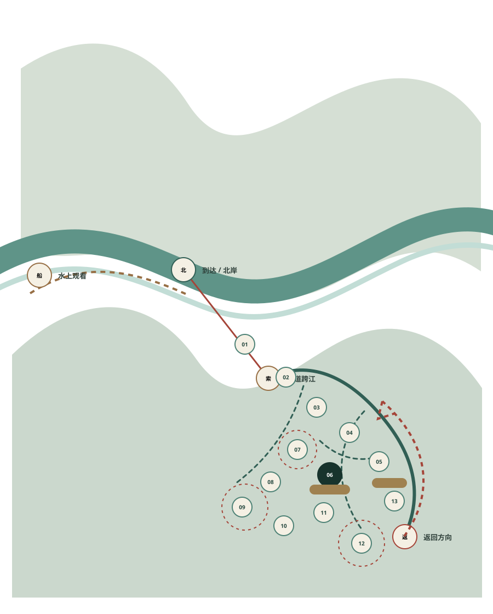

沿真实路线自由观察
点击路线节点查看其可选互动；路线本身不会被游戏锁住。
NORMAL · FULL

ROUTE-03 / LOCKED CURRENT
直接调用 GitHub 可编辑地图；NTS，非 GPS，非十三点任务路线
直接调用 GitHub 可编辑地图；NTS，非 GPS，非十三点任务路线
先游清江，再读清江。
界面主动后退，让景观成为第一阅读。只有游客主动选择观察对象时，解释层才短暂出现。
互动已关闭
路线与回程信息继续保留。请按现场服务指引离开，不继续收集或解谜。
船钥匙 / 一核三片
可编辑矢量状态舟核空白。选择节点后，只记录你主动看见的关系。
个人舟印地图
0 / 非完成率还没有舟印。空白不是失败。